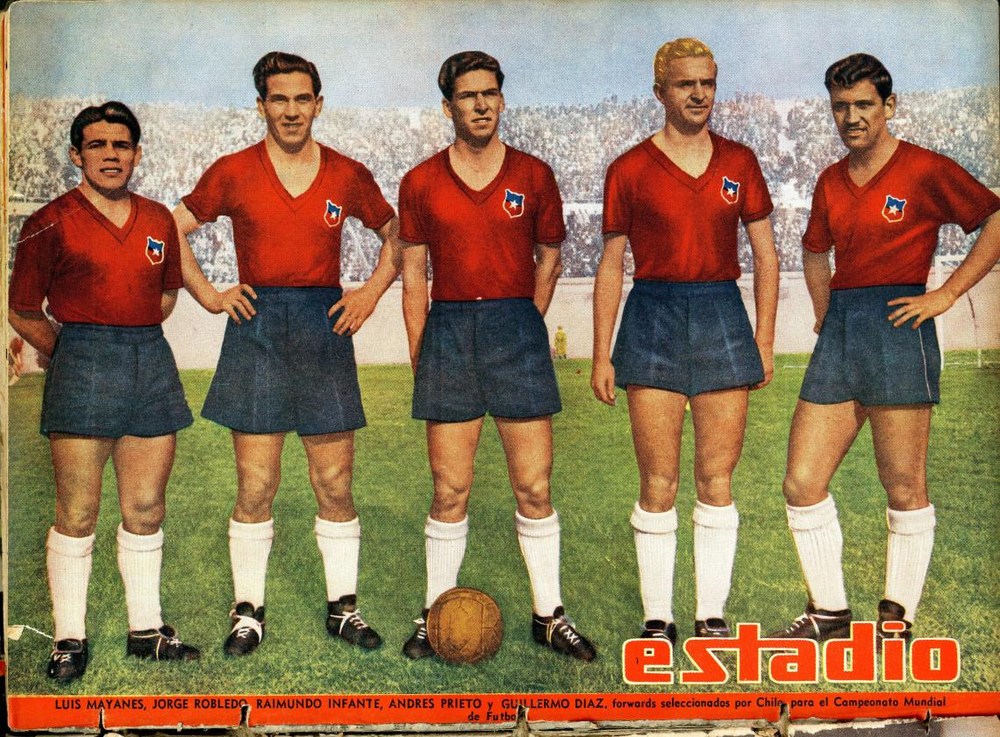
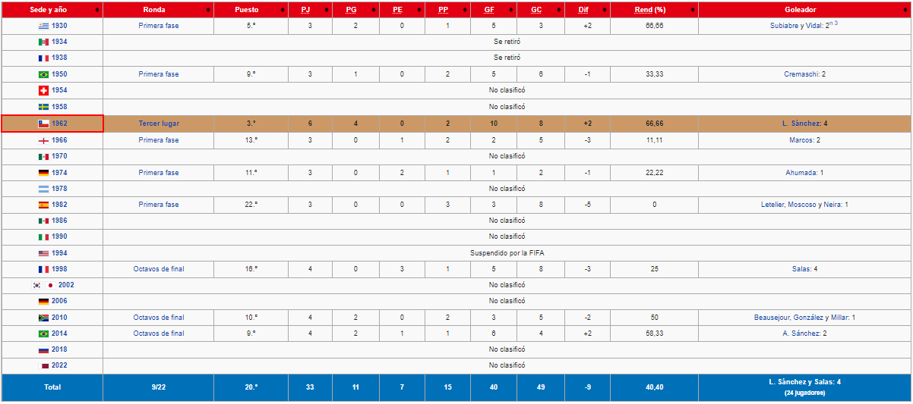

Participaciones
Nueve aventuras, nueve participaciones, nueves momentos donde todos soñamos como país ser campeones del mundo; Uruguay 1930, Brasil 1950, Chile 1962, Inglaterra 1966, Alemania 1974, España 1982, Francia 1998, Sudáfrica 2010 y Brasil 2014. Si bien nunca lo hemos logrado, la historia de Chile en los mundiales de futbol tiene anécdotas para todos los gustos, y en la Biblioteca Nacional los invitamos a repasarlas con nosotros

En su historia la selección ha jugado en 9 de las 21 ediciones de la Copa del Mundo, Uruguay 1930, Brasil 1950, Chile 1962, Inglaterra 1966, Alemania 1974, España 1982, Francia 1998, Sudáfrica 2010 y Brasil 2014.
Estadísticas
